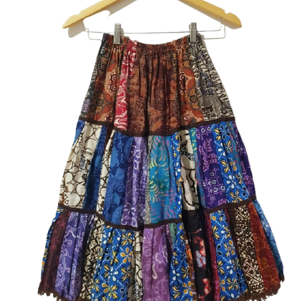
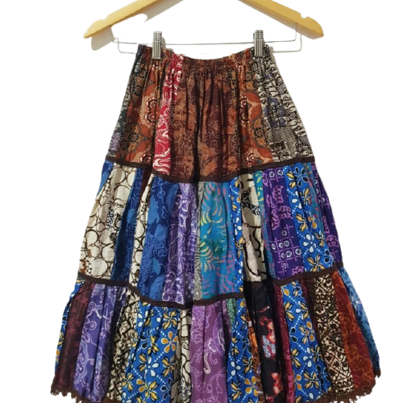

RECYCLE
Less Waste In The Neighborhood
Definisi
Recycle berarti 'mendaur ulang'. Langkah ini bisa disebut sebagai langkah memberikan kesempatan kedua untuk berbagai produk bekas agar bisa menjadi produk baru. Dengan demikian, produk baru dari hasil daur ulang tersebut bisa dimanfaatkan kembali dan tidak hanya menjadi tumpukan sampah yang mencemari lingkungan. Produk yang didaur ulang biasanya adalah limbah dengan bahan yang tidak bisa langsung digunakan lagi.
Solusi
Mendaur ulang baju yang sudah robek menjadi rok perca
Mengolah sampah kertas menjadi kertas atau karton kembali.
Olah sampah kertas menjadi kertas atau karton kembali.
Lakukan pengolahan sampah organic menjadi kompos.
Lakukan pengolahan sampah non organic menjadi barang yang bermanfaat.
 
